inheritances
view markdownneural signals
- ion channel properties
- gating energy - how is the channel activated
- ionic selectivity - which ions pass through
- high ap velocity when these are high
- channel density
- channel kinetics
- axon diameter
- axon surface resistance
- $\lambda = \sqrt{\frac{r_m}{r_a}}$
- synapse types
- electrical
- chemical
- postsynaptic receptors
- ionotropic receptors - directly gated
- metabotropic receptors - indirectly gated through 2nd messengers
- If ion reversal potential is 0 (ex. $E_{Cl}$ sometimes) then shunting = divisive inhibition
electrophysiology
- EEG - whole brain
- ERG (electroretinogram) - whole retina
- single cell
- sharp micro-electrode - has problems
- high resistance
- poor seal with membrane
- mechanically unstable
- patch recording - uses suction to overcome powers
- Flaw: bad for studying second-messenger systems because inside of electrode / cell fuse
- different types (whole cell, outside-out, inside-out)
- sharp micro-electrode - has problems
- clamp
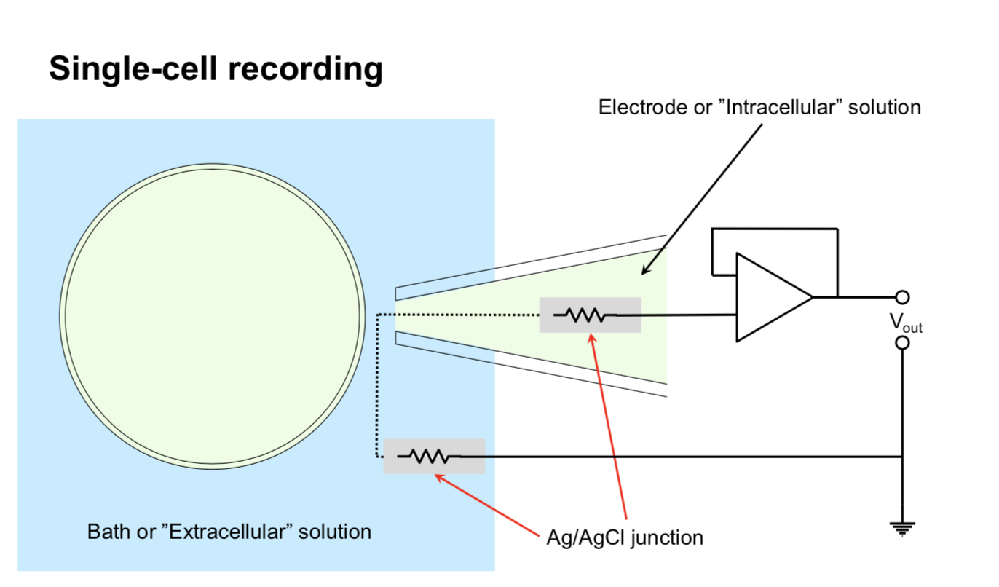
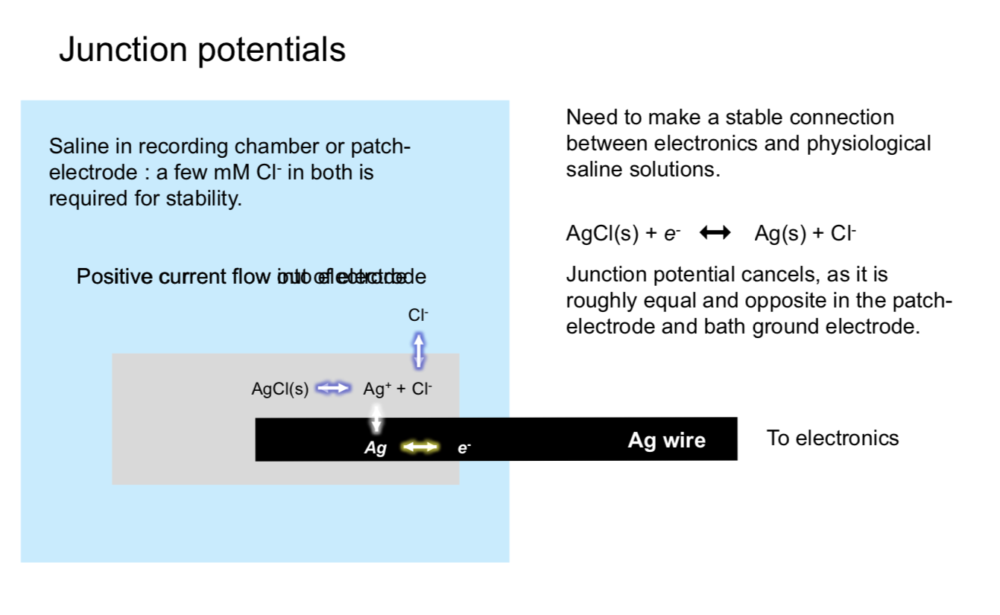
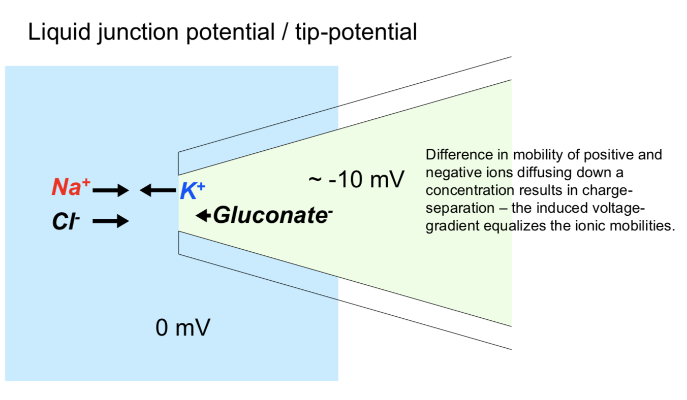
- types
- whole-cell
- cell-attached
- inside-out
- outside-out
- whole cell perforated - generally better, but difficult
- recording types
- current-clamp - record potential
- voltage clamp - record current - most common
- conductance-clamp - complicated
- IV curve - measured with voltage clamp
- V - voltage clamped at
- I - maximal current evoked by clamping at this voltage
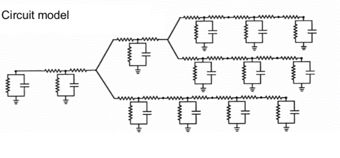
recording + imaging
electrode arrays
- multi-electrode array recording (MEA)
- well-suited for retina
- can now get several thousand electrodes
- put retina onto MEA to record ganglion cells
- waves of activity spread accross retina during development - probably important for wiring retina
- patch ~ 500µm accross
- spike sorting
- cluster spikes from different neurons based on amplitude, wave shape, refractory period violations
- spatiotemporal white noise stimulu - sequence of stimulus frames with randomly assigned pixel intensities (Bernoulli or Gaussian)
- spike-triggered average stimulus - averagin frames that correspond to spikes - yields receptive field
- requires finding timing (too short and spike won’t fire, too long and won’t repeatedly fire)
- retinal cell ganglion classification
- cluster by STA timecourse and autocorrelation pca
- after clustering, receptive fields of any cluster don’t overlap too much
- cell mosaics - ganglion cells tile entire retina
- ganglion cell receptive field instead of one blob is several small blobs (the cone array)
- each blob corresponds to one cone cell
- cones: red, green, blue cones are random
- ganglion midget cells contain color information - make red-green connections
- this is found in STA
- connects to broad set of cells, not just closest
imaging - voltage
- voltage-sensitive dyes - would be great
- could provide spatially localized, non invasive recordings
- doesn’t exists - usually toxic and inefficient (small fluorescence change / voltage change)
- APs short and small area limiting number of photons
- subthreshold PSPs (postsynaptic potentials) only have small voltage change
- electrochromic - fast, low-sensitivity
- quenching/FRET - slow, high capacitance
- photo-induced electron transfer - fast, high sensitivity, low capacitance
- currently being developed by evan miller at berkeley in chemistry
- problem - lights up all the cells - trying to target a cell with genetics
- calcium imaging
- calcium influxes into cell through a variety of mechanisms
- calcium indicators
- original: aequorin - bioluminescent protein from jellyfish
- calcium indicator - calcium binds to fluorophore and changes its shape, which changes its fluorescence
- fret-based - calcium brings together two proteins
- now most common: GCaMPs
- two-photon imaging in the retina
- infrared stimulus to drive laser (can’t use light, would stimulate retina)
- T. Euler has been leader in this field
- can simultaneously attach electrode and measure single spikes while calcium imaging
- Ca signal slower than electrical signal - can lose some things
- lots of functional types of retinal ganglions cells (>32?)
- respond to different stimuli
- different morphology
rod and cone photoreceptor function
- retina - large metabolic rate
- at the back of the eye, fairly regular array
- ~1.2 mil optic nerve fibers
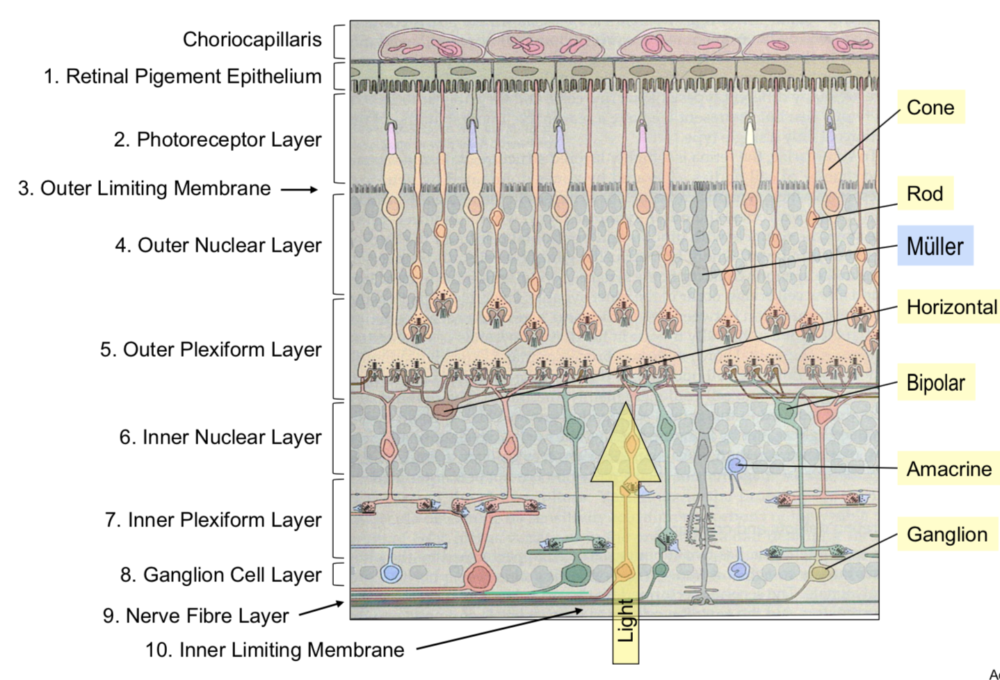
- pigment absorbs stray photons to reduce noise
- cones
- ~6 mil cones
- low sensitivity
- fast responses
- don’t saturate
- selective for the direction of light rays
- rods
- ~120 mil
- high sensitivity to light
- slow responses
- saturate
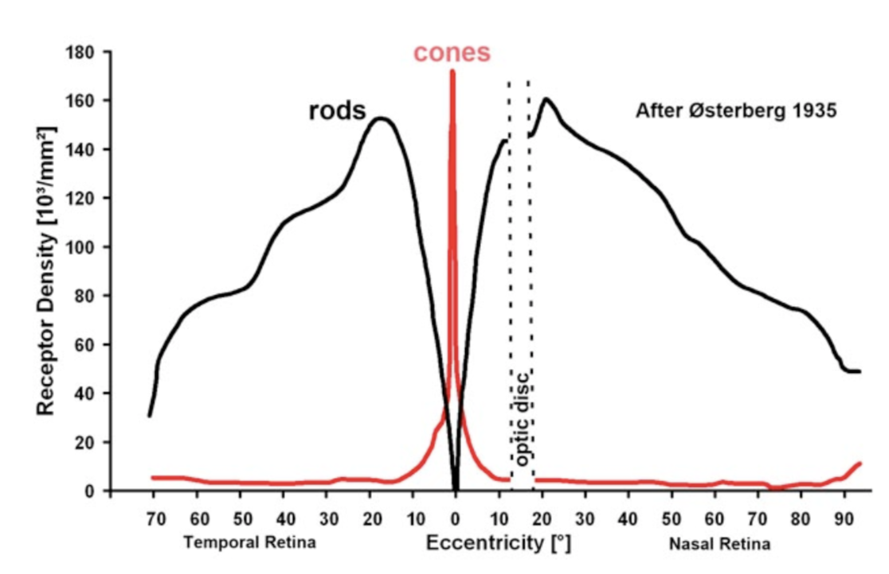
- photo-transduction - converts photons into voltage-changes
- terminals
- cone pedicle
- rod spherule
- glutamate release modulated by voltage + Ca
horizontal cells - outer retinal signaling and lateral inhibition
- on-center - responds to white small circle
- off-center - responds to black small circle
- horizontal cells - if you make circle to big, these inhibit the photoreceptors
- adjust for mean by shifting calcium with hc surround antagonism (5 possible biphysical mechanisms)
- extracellular pH
- ephaptic mechanism
- natural scenes contain strong spatial correlations
- predictive coding - use surrounding regions to predict the center value
- subtract predicted value from actually measured value
- send nothing if you could have predicted, otherwise info you send is interesting
signaling pathways through the retina - amacrine cells and inner retinal processing of visual information
- bipolar cells begin parallel signalling in the visual system
- amacrine cells - generally modulate bipolar cells / ganglion cells
- very structurally diverse: glycinergic = narrow-field, GABAergic = wide-field
- way more cones than ganglion cells
- ganglion cells have object motion sensitivity
- generated by lateral inhibition
- starburst amacrine cells - generate directional signals in the retina
retinal ganglion cells
- takes inputs from bipolar cells
primate retina
- primate retina has 2 major types of ganglion cells
- midget ganglion cells (~75%) - majority, high spatial acuity
- parvocellular pathway
- parasol ganglion cells (~15%) - high temporal resolution
- magnocellular pathway
- little known about most other types of ganglion cells
- midget ganglion cells (~75%) - majority, high spatial acuity
- we don’t have aliasing because visual system filters out the high frequencies
- color
- red-green keeps center surround
- blue-yellow doesn’t
- direction-selective ganglion cells
- activated when the image moves on the retina
- specific allele can get rid of these (affects GABAergic starburst amacrine cells)
- different dendrites represent different directions (inputs are pretty symmetrical)
non-neuronal retina stuff
retinal glia
- glia greek for “glue”
- 3 types
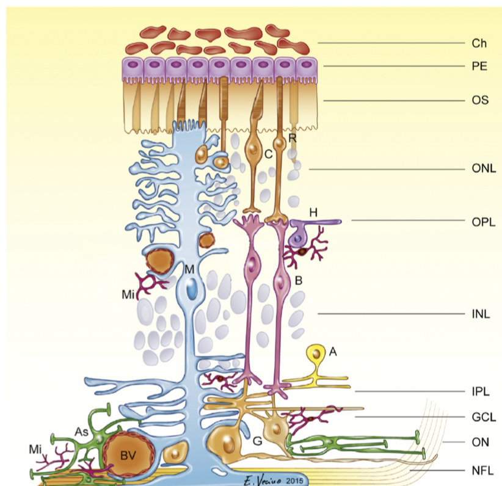
- Muller cells
- from multiplotent retinal progenitor cells (same that make neurons)
- in fish, with damage muller cells can become neurons (forced in mammals)
- abundant, tile the retina
- functions
- mechanical support
- energy storage
- clearing waste products
- neurotransmitter recycling (ex. glutamate-glutamine cycling)
- metabolism
- K+ homeostasis (uptake and redistribution)
- disease - gliosis - upregulation of intermediate filaments common in many retinal diseases
- from multiplotent retinal progenitor cells (same that make neurons)
- astrocytes
- originate from brain, enter via optic nerve
- look star shaped
- functions: lots of neurovascular
- cell bodies don’t move, but processes constantly move
- disease - become reactive in many retinal diseases
- microglia
- myeloid origin
- concentrated in synaptic layers
- immune cells - phagocytosis
- disease - activation occurs with / before retinal cell death
- microglial depletion alters retinal synapses $\implies$ microglia maintain synapses (wang et al. 2016 j neurosci)
- microglia are highly motile and respond dynamically to stimuli (e.g. neurotransmitters)
- microglia respond dynamically to injury
retinal pigment epithelium (rpe)
- monolayer of pigmented, hexagonally-shaped epithelium cells
- surround outer segments of photoreceptors
- cells have tight junctions
- functions
- main: light absorption
- epithelial transport - require water + photoreceptor cycling + oxygen
- photo-oxidation causes damage - photoreceptor tip constantly being phagocytosed, base regenerated - completely renewed in 11 days
- visual cycle - recycling retinoids
- number of diseases involve this
- others: phagocytosis, secretion, glia
retinal blood supply
-
retina has highest metabolic demand of any tissue
-
vasculature - eye is only place we can noninvasively view vasculature
- often diagnose stuff like hypertension / diabetes fom eye
-
2 major blood supplies (non-overlapping)
- outer retinal blood supply (past RPE) = posterior ciliary arteries
- outer 1/3
- bruch’s membrane
- choroid - helps provide nutrients, cool retina
- inner retinal blood supply = central retinal artery
- inner 2/3
- no inner capillaries in foveal avascular zone - area near fovea (these would block light)
- outer retinal blood supply (past RPE) = posterior ciliary arteries
-
blood-retinal barriers (BRB)
- outer BRB - tight junctions between RPE cells
- fenestrated - leaky
- inner BRB - tight junctions between capillary endothelial cells
- non-fenestrated
- outer BRB - tight junctions between RPE cells
-
autoregulation of retinal blood supply
- outer - under sympathetic control
- inner - autoregulated by neuronal demands (neurovascular coupling)
retinal diseases
- these are the 3 retinal diseases deepmind is studying
age-related macular degeneration
- degenerates outer retina (photoreceptors/RPE/choroid) in macula = central 5-6 mm of retina (contains fovea, which is central 1.5mm)
- leading cause of vision loss in >50 yo
- big spot missing in center of visual field
- 2 types
- dry = non-exudative = non-neovascular
- wet = exudative = neovascular
- usually get dry then wet (worse)
- OCT = optical coherence tomography
- visualizes cross-sectional retina view with infrared
dry
- drusen - show up as yellow spots on fundus image
- lipofuscin - undigested material from photoreceptor turniover accumulates in the RPE (and some in Bruch’s membrane)
- drusen - leads to degeneration of photoreceptors
- inflammation - activates immune cells
- probably death of RPE leads to death of photoreceptors
wet
- bleeding
- treatments
- 1980s - burn small holes to reduce oxygen demand
- 1990s - photodynamic therapy - kind of like cauterizing wound
- 2000s - anti-vascular endothelial gworth factor (VEGF) therapies
- stops more leaky vessels from growing
- must be injected into eye every 1-2 months (maybe longer over time)
- can recover a decent amount
- can be very expensive ~10k / dose
diabetic retinopathy
- leaky blood vessels - often diagnose diabetes through retinopathy
- diabetes types
- type 1 - autoimmune reaction destroys pancreating $\beta$ cells that produces insulin: hyperglycemia + hypoglycemia
- type 2 - reduced insulin sensitivity: mainly hyperglycemia
- need insulin injection
- diabetic retinopathy types
- proliferative
- very bad
- non-proliferative
- microangiopathy - mainly affects capillaries
- patients probably won’t notice this unless its in the macula - this is why diagnosis w/ ml could be useful
- proliferative
- neuronal changes seem to precede vascular changes
- treatment - intravitreal injections of anti-VEGF treatments
glaucoma
- optic neuropathy with ganglion cell death and visual field loss
- people say “pressure in the eye” - but this is just a risk factor
- lose your periphery slowly
- optic nerve
- 1-2.2 million ganglion cell axons
- ~40% of total afferent input to the brain/
- cup - region where there are no axons
experimental methods
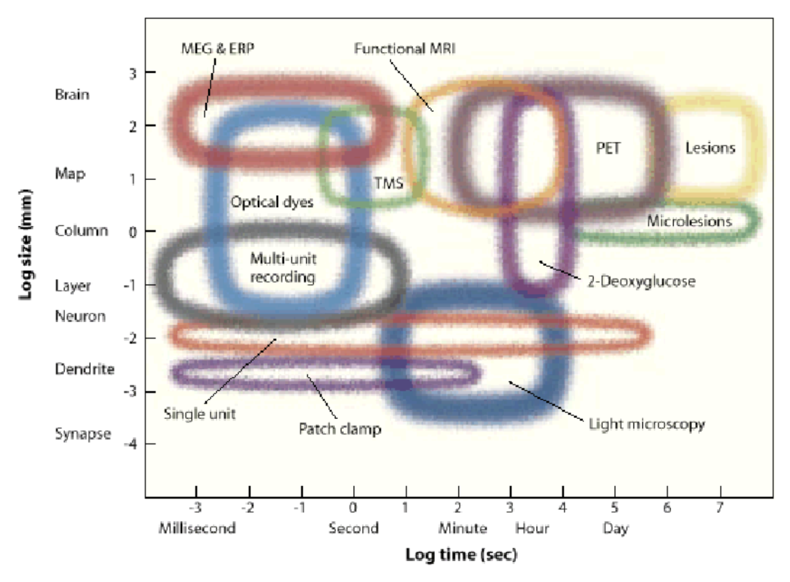
- 7 dimensions
- spatial res.
- temporal res.
- depth - how deep in can you image
- toxicity - does it damage the cells
- spatial field - how big a region can you see
- temporal duration (how long it can stay in)
- invasiveness
single cell
- fluorescence imaging
- gfp - protein, gets spine-level precision
- calcium imaging - not a protein, but still does fluorescence
- microelectrode recording
- extracellular recording
- can measure local field potentials - sum of local currents (most of the volume is in the dendrites - not a great proxy for spikes)
- can go deep
- spikes are less ambiguous than in calcium imaging
- intracellular recording
- can measure membrane potential much more precisely
- strengths
- great temporal resolution
- weaknesses
- invasive
- single neurons has potential biases
- 80 neurons are not representative
- more likely to record from excitatory, bigger neurons
- unnatural stimuli
- extracellular recording
alteration
- optogenetic probes
- light-sensitive opsins are genetically modified - when light shines on it, does something (depolarize, hyperpolarize, alter intracellular signaling)
- delivery
- viral infection
- transgenic animals
- electroporation
- transcranial magnetic stimulation
- coil sits on head, induces current
- pulse is brief - 1 ms
- functional effects are long - milliseconds, minutes, days…
- uses
- enhance neural function
- probe excitability
- explore functional anatomy
- “virtual lesions” - but lingers, …
- local microstimulation with invasive electrodes possible
measure electromagnetic signals
-
EEG (electroencephalography)
-
recorded on scalp (only gets synchronous activity)
-
can analyze frequencies (higher frequencies like gamma are attenuated)
-
delta theta alpha beta gamma 0.5-4 (Hz) 4-8 8-13 13-30 30-50
-
-
can analyze event-related potentials (when the signals peak)
-
ECOG = electrocorticography - put electrodes on brain (for patients)
-
-
MEG (magenetoencephalography)
- measure magnetic fields generated by active neurons
- fMRI type setup
- higher spatial resolution
- signal is not really distorted by skull (magnetic field goes through better)
dyes
- voltage-sensitive dyes
- leaks over everything - can’t select for single neurons / spikes
- looks at large spatial field, but can’t resolve single cells
- dyes are toxic to neurons over time
blood
- intrinsic signal optical imaging
- shine in light and see what’s reflected - oxygenated is more reddish, deoxygenated more bluish
- have to expose surface of brain (but can do pre-surgical imaging in humans)
- spatial res limited by capillaries (100 micrometers)
- temporal res - slow because neurovascular coupling is slow
- fMRI
- applied magnetic field - very large, homogenous magnetic field
- pulse of energy in radiofrequency range excite protons
- protons emit energy at resonance frequency proportional to local magnetic field strength (this called nuclear magnetic resonance)
- magnetic field gradients allow for spatial localization of MR signal in 3d
- rate of energy decay in brain depends on local biochemistry + oxygenated hemoglobin
- BOLD = blood oxygenation level-dependent signal
- blood oxygenation has linear relationship with decay
- pipeline
- activity -> more oxygen use + cerebral blood flow -> magnetic field distortions -> MRI signal intensity
- activity make oxygen go down real quick then blood flow over compensates, then saturates
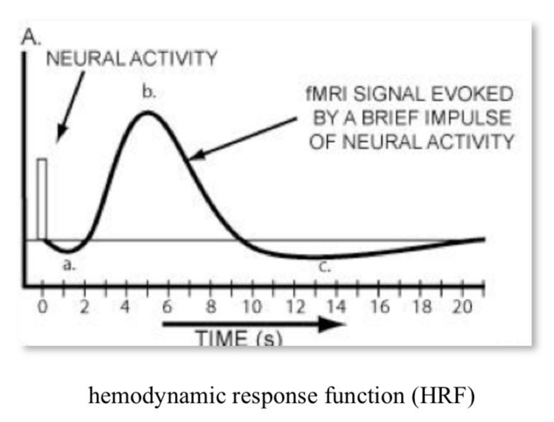
- can’t separate excitatory / inhibitory
- activity make oxygen go down real quick then blood flow over compensates, then saturates
- LFP predicts BOLD well (only slightly better than MUA)
- all are really pretty well correlated
- activity -> more oxygen use + cerebral blood flow -> magnetic field distortions -> MRI signal intensity
- fMRI analysis
- block design - usually have block of nothing between stimuli blocks
- activation statistics - compare activation between conditions
- event-related design - all trials analyzed over time
- block design - usually have block of nothing between stimuli blocks
PET
- PET
- fMRI type setup
- radioactive thing (positron) put into brain
- as it decays, can triangulate things
- cells with most FDG (a tracer) are using the most glucose
- now used for studying neurotransmitter maps
- good for studying specific radiolabeled tracers
- relatively poor spatial res (1 cm), temporal res is minutes
- minor risk
mapping visual cortex
- cortical flat mapping
- gray matter has ~ 100,000 somas / mm^3, ~3km axon /mm^3
- folds in cortical topology make some things much farther than they seem
- most stuff is white matter
- sulci - negative curvature (indent)
- gyri - postive curvature (outdent)
- some sulci are common among all people (landmarks)
- columns are organized into “pinwheels” - columns in a circle prefer different orientations in spinning pattern
- weaknesses
- expensive
- poor temporal / spatial resolution
- topographic mapping
- pimary visual cortex - visual maps seem to be replicated
- history
- gun people - between franco-prussian war, russo-japanese war
- sir joseph whitworth
- alfred drupp
- william ellis metford
- faster bullets would leave, cauterize wound, more local cuts
- tatsuji inouye - studied soldiers after gunshot wounds (1909) - learned map of retina in the back of the brain
- mapping
- each visual areas has some retinotopic mapping
- moving points
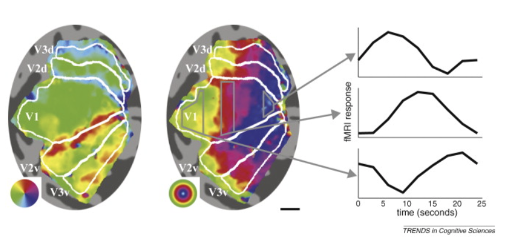
- periodic mapping stimuli - rotating wedge / other things (fig left) $\implies$ between visual areas (e.g. v1 + v2) mirror image tiling of locations (borders between regions are like mirrors)
- eccentricity mapping (fig right) - rings spread out evenly - no mirrors
- cortical magnification - way more v1 for central locations
- more than proportion of retina dedicated to v1
- somehow this is offset to give us our normal perception
- population receptive field mapping
- predefine each fMRI voxel will respond to Gaussian
- over time show stimulus
- optimization model finds best point point for each voxel
- more efficient than periodic mapping…
- gun people - between franco-prussian war, russo-japanese war
magnetic resonance spectroscopy (mrs)
- just like NMR - put in something like water
- gives chemical composition of a region of brain
- slow, low resolution
- basically pick something (like GABA) and just look at where that is
- certain molecules appear the same though….
event-related optical signal
-
=near-infrared spectroscopy - changes blood-oxygentation
-
active neural tissue scatters infrared light
- infrared imaging shows which neurons are active
- some issues….blond haired people can’t do it
- great temporal res, poor spatial res
-
bunch of sources / detectors on a helmet
-
suitable for a lot of patients that can’t do fMRI (children, patients, …)
- people can walk around
info processing in the visual system
- vision is ill-posed problem
- light reflection depends on multiple things
- light source
- material
- angle
- atmospheric properties
- lens sorts EM waves by direction
- also lets you get in more light compared to pinhole camera
- brain must use priors to create repr. of world
- ex. image of a cow - data on retina is messy but you perceive something better
- ex. mooney faces - can create stories from images after shading
- ex. brown and orange are same hue, but different brightness
- 3d shadow helps make this better
- color constancy - see same colors under different lighting conditions
- very large individual differences in ratios of l, m, s cones
- eyes develop very suddenly around cambrian explosion ~500 mya
- eyes takes ~500k years (very fast) - nilsson & pelger 1994
- fish have evolved spherical lens several times independently
- can understand lenses if we understand optics
- can understand brain if we understand principles…
- compound eyes (ex. fly) repeat dots each get slightly shifted version of world
- collects lots of light - operates at very high speed (e.g. fly h1 neuron bialek 2001)
- sand wasp can find its nest based on pattern of stuff that surrounds its nest
- jumping spider has interesting visual system
dynamic range of rods + cones
- spontaneous isomerizations determine lower limit of light detection
- rods
- saturate
- cones
- turn on then off
- lateral inhibition - improves contrast
- horizontal cells
- HI (type B)
- dendrites contact rods, M/L cones
- connected via gap junctions
- HII (type A)
- dendrites contact S, M/L cones
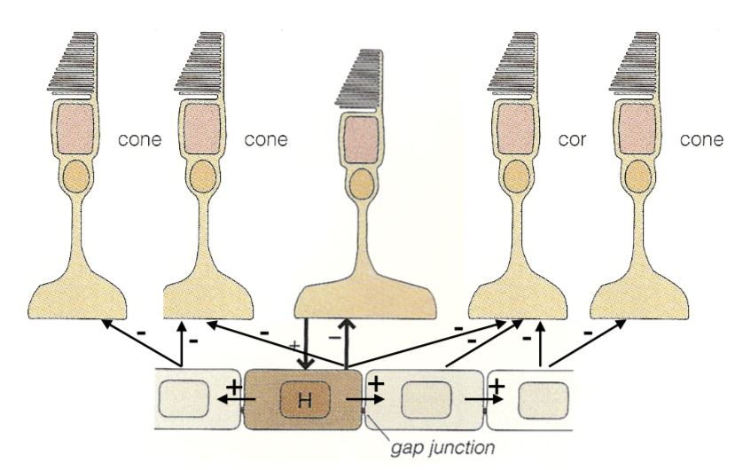
- HI (type B)
- bipolar cells
- rod v. cone
- on v. off
- midget v. diffuse
- amacrine cells
- link bipolar cells to ganglion cells
whitening and tiling
- redundancy reduction (horace barlow 1961) - pixels are correlated, want to compress info
- second-order statistics (auto-correlation function) - pixel correlation vs. spatial separation of pixels
- power spectrum of natural images - average power over angles
- power goes down for higher spatial frequencies (white noise would be flat)
- seems to go down as ~1/freq universally
- optic nerve should send unpredictable signals ~look like white noise, decorrelated
- shouldn’t be able to predict one nerve from the others
- this is because nerves + spikes are expensive
- multiply by filter = frequency to get filter that is flat (whitening - atick & redlich 1992)
- this is a lowpass filter
- this filter looks like center-surround 2D filter (looks like edges)
- wasn’t feasible to do this experiment (measuring optic nerve) until recently but has been shown to be true
- people have characterized spatiotemporal power spectrum of natural scenes
- ex. dan et al. 1996 - LGN neurons whiten time-varying natural images but not white noise
- efficient coding model (karklin + simoncelli 2012)
- why need on and off type - duplicates each cone
- hypothesis: RGCs send spikes which are discretized (not continuous like all the signals within retina)
- differences need to be able to send positive/negative rates - this requires having 2 cells
- alternatively could have a baseline and send more or less but baseline signal is wasteful because usually send 0
- still don’t send 0 as 0 firing rate because too slow to send a 0
- try to maximize information out of firing rates - penalty on firing rates
- simulation with some neurons on natural images
- yields on-center / off-center neurons
- optic nerve has pretty equal firing rates - don’t get pca type solns
- why need on and off type - duplicates each cone
- tiling - ratio varies with eccentricity (higher cone:ganglion ratio in periphery)
- bipolar:ganglion is 1:1 in fovea
- dendritic field diameter increases linearly with eccentricity
- cones also increase
- RGCs limit peripheral vision not cones
- picture here!!! smoothing and subsampling by RGCs
- scale-invariant sampling lattice - same amount of RGCs regardless of how far smth is
- but more photoreceptors per ganglion cell (maybe higher signal to noise ratio)
- ex. with letters getting bigger in surround
visual pathways
visual pathways
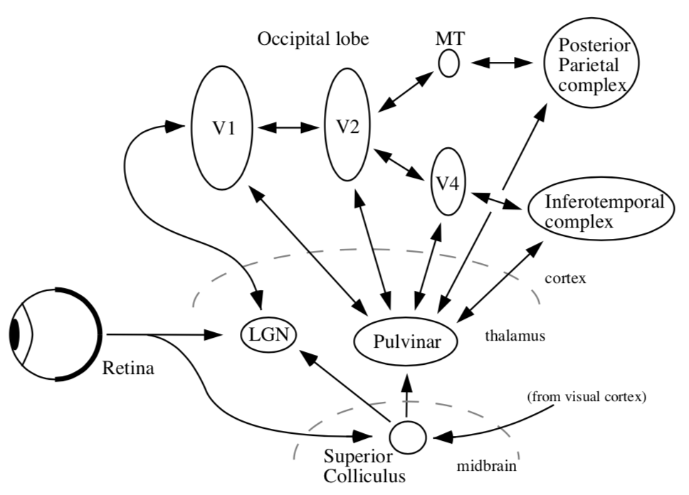
- organization
- thalamus + cortex always work together = thalamocortical system
- midbrain - reptilian, old
- all sensory must pass through thalamus to get to cortex
- vision must pass through LGN (also stuff goes back to pulvinar)
- different RGCs that do different things have different dendritic field diameters
- 6 main targets
- LGN (thalamus)
- has 6 layers
- superior colliculus (midbrain)
- eye movements - sensory map on top of motor map - can make eyes move to a location
- map centered at eye location
- thought to be reflexive
- without LGN, get blindsight - can catch a ball, dodge things, …
- eye movements - sensory map on top of motor map - can make eyes move to a location
- suprachiasmatic nucleus
- circadian rhythm
- gets input from special photosensitive RGCs that are big + slow
- accessory optic system
- pretectum - pupillary light reflex
- pregeniculate
- LGN (thalamus)
lgn
- has six layers
- parvocellular are upper 4 layers
- subdivided by on/off, left/right
- inputs from midget cells
- magnocellular are bottom 2 layers
- inputs from parasol cells
- losing magno seems to lose spatial frequency, control different temporal frequencies, parvo gives you color
- important - different spatial/temporal frequencies - differentiate from the beginning
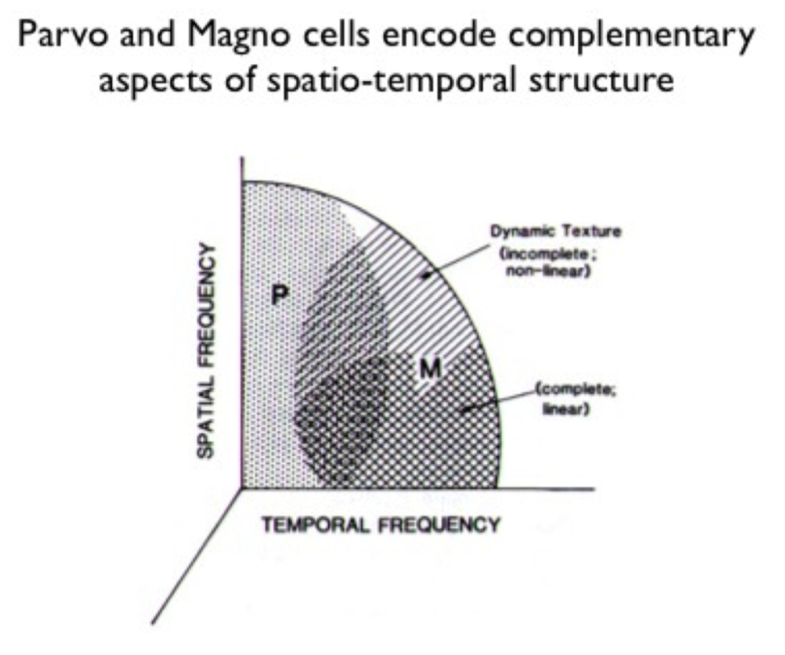
color
- L, M, S cones (red, green, blue)
- have learned more from psychophysics than from neural recording
- psychophysics: adapt to one axis of color
- people habituate to directions based on changes of cones (ex. adapting to S cone doesn’t affect L & M cones)
- color oponnency in LGN (derrington et al. 1984) - 2 types of color cells in LGN
- cone response distributions
- L and M correlate a lot
- L and S correlate a little
- pca goes to luminance, $\alpha$, $\beta$
- luminance dominates
- color really takes only ~10% more space than black-and-white
- decompose into luminance image and 2 color difference images
- non-luminance image requires less bits (can be blurred, less bits)
eye movements
- saccades - old, human vision is fundamentally dynamic
- head also moves while eye moves and they help counteract each other
- when in bite bar, saccadic movements are bigger
- fixational eye movements
- new paper - motion helps you see by sampling cone array
- could also be that image fades on retina (ex. troxler fading)
- michael land did lots of cool things
- new paper - motion helps you see by sampling cone array
v1 (primary)
- pathways
- right part of eyes go to right brain (sees left visual field)
- corpus collosum connects left/right brains but nothing else
- when you lose it, like there are 2 people within person
- very difficult stitching problem…
- left and right lgn, superior colliculus, …
- regions defined by having a topographic map
- for later areas, histological differences, connectivity, physiological properties
- connections are all bidirectional
- for later areas, histological differences, connectivity, physiological properties
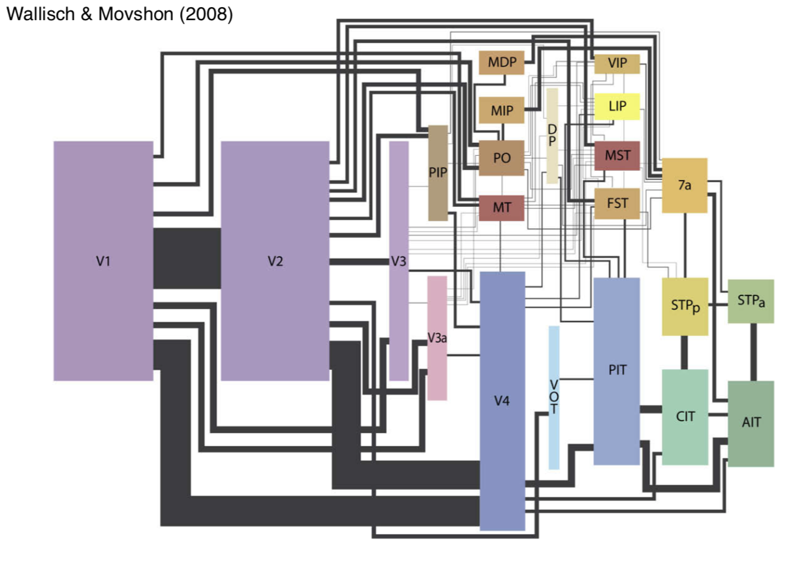
retinotopy- v1 has map of retina that’s flattened (proportional to ganglion cells)
- probably no “fixed up” image of the world somewhere
- could understand perception in terms of action
- LGN wires don’t interact with each other too much
- some inhibitory interneurons
- cortex
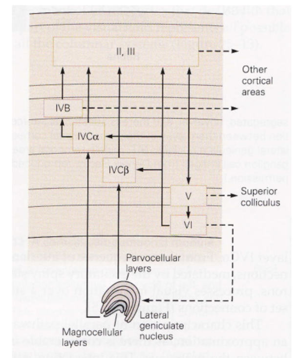
- ~2mm thick
- layer 1 - mostly axons
- layer 2/3 - association layer
- lots of neurons connect to each other
- layer 4 - input layer
- further subdivided (parvo goes to one, magno to another)
- layer 5 - output layer (usually to motor)
- comes back tho LGN (adam sillito)
- unclear what it does - experiments with cooling cortex don’t yield too many profound changes
- neurons from different eyes go to different regions of layer 4 (and then mix in layer 2/3)
- ocular dominance columns (only within layer 4) - one eye has bands, other eye has other bands
- hypercolumn - put 2 eyes together
- lots of metabolic blobs tiles this
- contains lots of neurons with different orientation selectivities
- monkey has ~1k hypercolumns in V1
- contains 100k neurons
- 14 x 14 pixel array (coming in from thalamus)
- 1 mm^2 of cortex contains 100k neurons
- v1 is highly overcomplete - way more neurons than needed
- electrophysiology
- electrode pics up microvolts
- v1 properties not in LGN
- orientation selectivity
- direction selectivity
- simple cells sum LGN inputs
- retina and other things are wired up before birth
- standard model of V1
- neurons have oriented receptive fields (inhibited by bars around bar) with some temporal component
- response normalization, based on neighboring neurons
- pointwise non-linearity
- bruno doesn’t really believe this leads to perception
- neurons are highly nonlinear
- recurrent circuits of neurons are even more nonlinear
- there is no general method for characterizing nonlinear systems
- good model
- should be in the structure of layers
- why do we need so many neurons
- problems
- biased sampling - single units, ignore inhibitory, only find neurons that fire for what you want
- biased stimuli - bars/spots/etc.
- biased theories - data-driven vs. theory
- interdependence and context of scene
- ecological deviance
- power spectrum
- horizontal spatial frequency of 0 - vertical grating
- fft function assumes image at boundary is tiled - artifacts giving artificial edges (spatial frequencies of 0)
- could attenuate function at edges to fix this
extrastriate cortex
- striate cortex - v1 (has some kind of stripe - not striatum)
- extrastriate cortex - everything else
- all areas have one part on each hemisphere
- orientation columns - columns have similar orientation preferences
- doesn’t have to do with ocular dominance columns
- laterally within layers get all orientations in very small area
- repeated - one orientation will be represented lots of times
- different columns represent different xy coordinates
- overview
- dorsal stream - where
- mt (middle temporal area)
- spatial visual pathway - positional relationships
- vision for action pathway
- ventral stream - what
- v4
- object recognition pathway
- high resolution and form
- dorsal stream - where
- 10x more feedback, no strict motor areas, but lots of visuomotor areas
- V2 / V3 aren’t clearly in either stream
dorsal stream
- adaptation - like psychophysicist’s electrode
- area MT (middle temporal of macaque, although farther back in human)
- has preferred motion orientation columns
- visual area STS (superior temporal sulcus) responds to biological motion
- ex. 12 dots look like people
- parietal cortex also important for spatial attention
- biomotionlab is cool
ventral stream
- V1 -> V4 -> IT ->LGN
- we’re constantly adjusting for changes in illumination
- v4
- v4 seems to correspond to perceived colors not wavelengths
- damage to v4 stops you from seeing in color
- selectivity of v4 responses
- mixed magno and parvo inputs (ferrera et al. 1994)
- IT
- single column thing…
- jennifer aniston cell
- hand
- Halle Berry cell
- columnar architecture in IT also though….
- pseudo semantic columnar architecture (ex. facial perspective)
- single column thing…
- face perception orientation can be discriminated by newborn baby (meltzoff)
- can also imitate faces
- babies have trouble resolving high frequencies
- areas
- FFA - face selective, fusiform face area
- might not be faces, could be expertise
- PPA - places, parahippocampal place area (surrounds hippocampus)
- things are assymetric in unclear ways (although they contain representations of different visual fields)
- FFA - face selective, fusiform face area
sparse coding
- THIS ISN”T REALLY SPARSE CODING MOVE ELSEWHERE: power spectrum falls off with frequency as $1/f^2$(amplitude falls as 1/f)
- want to decorrelate - multiply by frequency that’s $f^2$
- you can’t do this for very high frequencies otherwise you amplify noise
- in spatial domain, looks like center surround similar to finding edges
- v1 has map of space, magnified at fovea
- want to explain how center-surround ganglion cells -> elongated orientation selective receptive fields
- representation - complete repr. with minimum number of possible neurons
- deeper in cortex - cells become more silent
- codes: insert pic!!!!
- dense -> sparse -> local (grandmother) codes
- sparse coding has questionable empirical evidence
- lgn fibers around 20 spikes / sec
- layer 4 fires ~ 1 spike /sec
- we don’t know this at other layers
- sparseness seems pretty constant as you go deeper (Rust & DiCarlo)
- tradeoff between complexity and invariance
- V1 simple cells are oriented, localized, bandpass
- projection pursuit (Field 1994) - project distr. onto low dim: you should get gaussian
- want to find axes that maximize non-gaussianity
- project idea
- look at sparsity in different layers
- sparse coding is v1 + retina!!! basis transformation
object recognition
- gabor function - convolve Gaussian with sinusoids of different frequency
- from dennis gabor
- in gabor transform, each basis function has same number of wobbles (self-similar)
- at top of visual system goes to entorhinal cortex then to hippocampus
- map sizes
- V2 little bigger than V1
- they fold over so that map of V1 goes 1-1 with map of V2
- neocognitron is unsupervised
- comments:
- “vision is about more than object recognition so deep nets don’t work”
- turing test for vision
- affordance = prior
- not like deep net which is a top box
- lots of outputs from intermediate areas
- perception as inference
- generative model we’re trying to fit data too
-
bayes rules: $P(E D) \propto P(D E) \cdot P(E)$ where E is environment and D is data about environment - lee + mumford, 2003 - hierarchical bayesian inference in visual cortex
- each area makes guesses and higher areas send back corrections
- mumford - fields medalist
- in real life, we are constantly guessing and trying to resolve ambiguities
top-down modulation
- attention is most-studied (refers to some different things)
- endogenous attention - voluntary, slow, effortful, interruptible
- exogenous attention - involuntary, fast effortless, disruptive
- attention is about more than where the eye is pointing
- change blindness - blind to things you’re not attending to
- invisible gorrila, door study
- covert attention - posner cueing task
endogenous
- better studied because it’s hard to disentangle stimulus vs. attention in exogenous case
- v4 very filtered by attention (ex. reynolds + chelazzi 04)
- also effects of attention in area v1 (ex. pick a side to attend to while fixating in center)
- IPS1 seem to have maps of attended stimuli (but ignore other stimuli)
- frontal eye fields - microstimulation forces eye movement
- can stimulate enough to attend, but not to saccade
exogenous
- inhibition of return - if we have attended a region, less like we return to that region
visual search
- having more similar objects makes it difficult
- feature-integration theory - different visual features are coded in parallel in separate feature maps (orientation, size, color)
- conjunction search - conjunction of features (ex. red circle) takes longer
- plenty of other areas
- ADD, alzheimers, intermodal attention, applied attention, attentional tracking, neurochemistry of attention, feature- and object-based attention…
- ex. driving - people in car will stop talking in serious situations unlike on phone
- predictive coding - unpredicted response evokes larger response
- fits with bayesian method - only need large response when you don’t predict what’s going to happen
- in this way, prediction is opposite to attention
visual neuropsychology
- blindsight - damage to V1; aren’t aware of visual stimuli but can do tasks in forced-choice paradigms
- retina goes through some things (ex. pulvinar) that aren’t V1 to get to higher order areas (ex. MT)
- dorsal pathway
- MT monkey lesions in monkeys impair motion perception but not contrast detection
- damage to MT causes motion blindness - life is a set of snapshots
- MT monkey lesions in monkeys impair motion perception but not contrast detection
- ventral pathway
- damage to V4 causes loss of color perception, can’t even imagine colors
- patient DF (well-known) - can only do vision for perception + action, couldn’t describe it = visual agnosia - perception as an object is impaired
- lots of different kinds
- prosopagnosia - can’t recognize faces - FFA, PPA (up to 1%)
- spatial neglect - failure to acknowledge objects in field contralateral to the lesion
- sometimes group things and only look at right sides of groups
- very weird - has strange reference frames
- functionally very similar to having blindness on one side
visual cortical development + plasticity
- development things
- neurons of right types generated in appropriate places
- migrate to final positions
- differentiate into final forms
- axons must follow right paths
- neurons must refine synaptic connections
- brain must remain flexible
- neurons ride up glial fibers until it stops - cortical layers develop inside-first (tracked)
- axon projections - some axons have to travel very far to connect (ex. LGN -> V1)
- follows chemical signal (even if it starts somewhere diff ends same place) - roger sperry 1943
- 3 stages in development of retina-lgn-v1 pathways
- experience-independent development - can occur prenatally
- ex. segregation in eye-specific layers
- retinal waves - spontaneous activity go accross the entire retina
- critical period of refinement of connections within and between cortical columns
- extremeley sensitive to abnormal experience
- competition to decide who connects where
- maturation and plasticity in adult life
- experience-independent development - can occur prenatally
adult plasticity
- these are due to “fatigue” of stimulated neurons
- color adaptation - afterim aimages + complementary colors
- slight tilt aftereffect as well
- problems with fatigue hypothesis
- doesn’t account for long-lasting adaptation effect (ex. McCulloch effect lasts very long time)
- don’t see optic flow adaptation in driving, even though we see this in the lab
- there is a clear critical period for plasticity, although auditory / somatosensory don’t
- braille reading in blind subject activates “visual cortex” area
- unclear it there is a critical period for this
- perceptual learning - can learn new visual tasks
- very sensitive to eye, etc.
- trying to reat amblyopia
- very unclear how much perceptual learning generalizes
alzheimer’s
- manifests in the eye
- two biomarkers - can find with PET or MRI
- amyloid $A\beta$ plaque proteins
- pTau proteins
- bunch of things in retina
- ex. RGC loss, NFL atrophy, blood flow rate, inflammation…all exist in other
- main thing - look for AB plaques with stains - requires someone is dead
- goal: diagnose alzheimer’s via noninvasive retinal imaging + visual function assessment
- imaging: modified spectralis HRA + OCT should look at biomarkers (+ other things ex. look at retinal structure deficits)